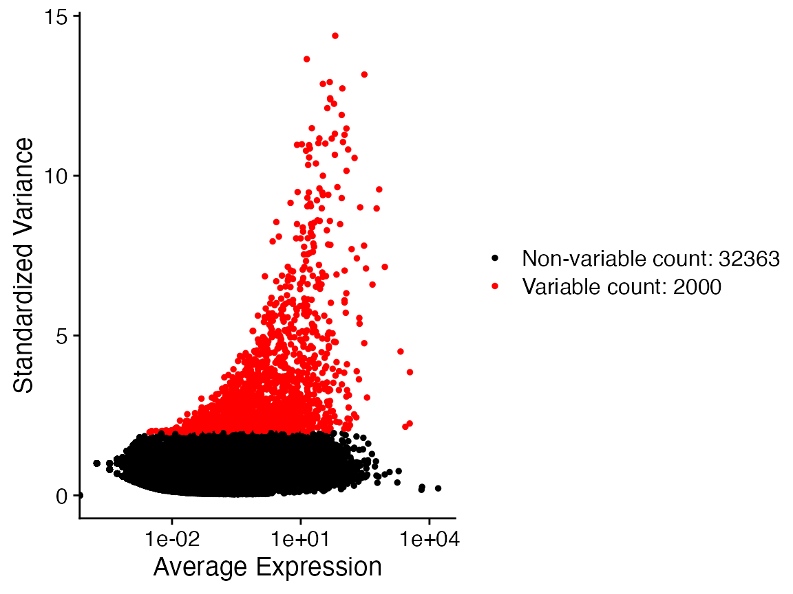
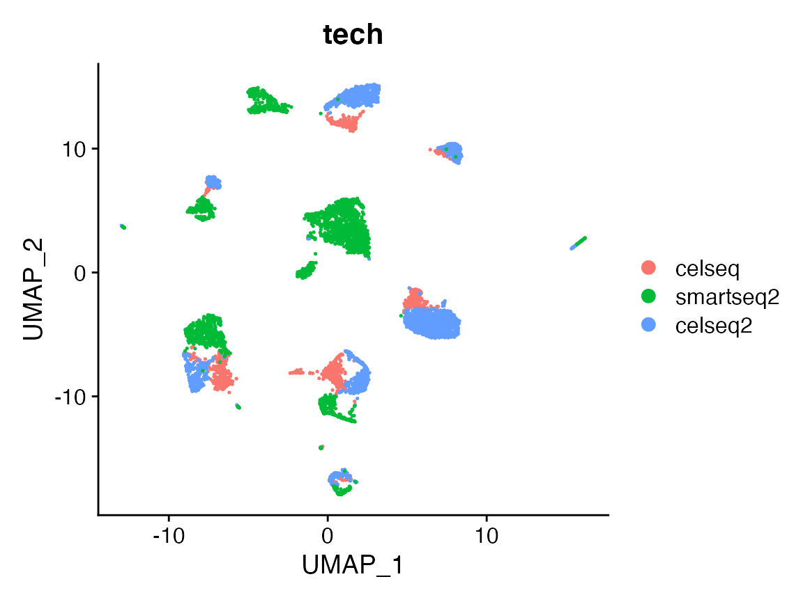
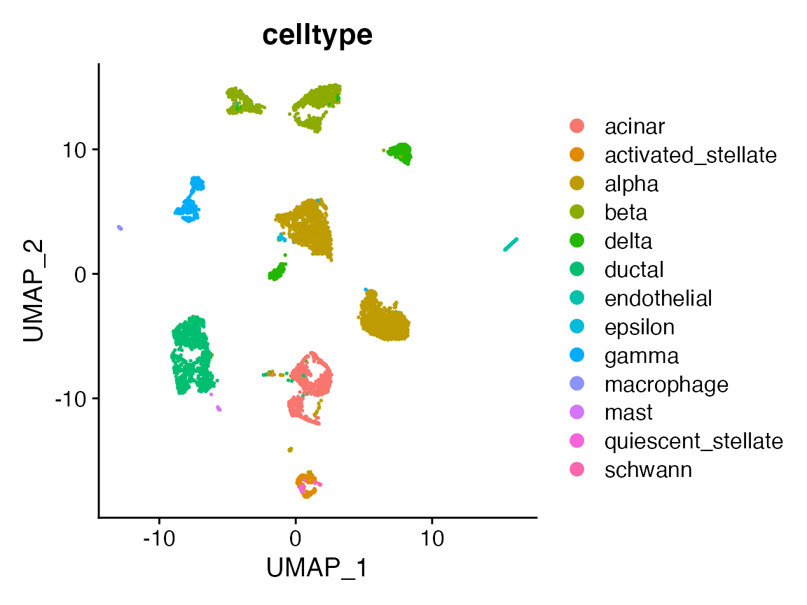

Batch Effect Correction on Pancreatic Cells (Multi-Batch)
Pancreatic_Integration_3_Batches.Rmd
library(Canek)
#> Registered S3 method overwritten by 'spdep':
#> method from
#> plot.mst ape
library(Seurat)
library(SeuratData)
#> Registered S3 method overwritten by 'cli':
#> method from
#> print.boxx spatstat
#> ── Installed datasets ───────────────────────────────────── SeuratData v0.2.1 ──
#> ✔ panc8 3.0.2
#> ────────────────────────────────────── Key ─────────────────────────────────────
#> ✔ Dataset loaded successfully
#> ❯ Dataset built with a newer version of Seurat than installed
#> ❓ Unknown version of Seurat installedIn this example we integrate three batches (celseq, celseq2 and smartseq2). We show the difference on the integration order by changing the parameter “Hierarchical”. This parameter is set as TRUE by default, meaning that we will integrate the first batch with the batch with has more MNN pairs under the first two principal components representation. With this, we aim to improve the integration between dissimilar batches, by first joining those batches which share a higher number of similar cells.
InstallData("panc8")
#> Warning: The following packages are already installed and will not be
#> reinstalled: panc8Select datasets and fix correction order. On this case we choose this especific order on the batches to better show the difference on the integration order.
x <- panc8[, panc8$tech %in% c("celseq2", "smartseq2", "celseq")]
x$tech <- factor(x$tech, c("celseq", "smartseq2", "celseq2"))Data preprocessing
x <- NormalizeData(x)
x <- FindVariableFeatures(x)
VariableFeaturePlot(x)
#> Warning: Transformation introduced infinite values in continuous x-axis
table(x$tech)
#>
#> celseq smartseq2 celseq2
#> 1004 2394 2285
x <- ScaleData(x)
#> Centering and scaling data matrix
x <- RunPCA(x, verbose = FALSE)
x <- RunUMAP(x, reduction = "pca", dims = 1:30, verbose = FALSE)
#> Warning: The default method for RunUMAP has changed from calling Python UMAP via reticulate to the R-native UWOT using the cosine metric
#> To use Python UMAP via reticulate, set umap.method to 'umap-learn' and metric to 'correlation'
#> This message will be shown once per sessionUMAP plot before correction
By analyzing the UMAP representation, we can see a closer similarity between celseq and celseq2 batches, which have a shorter distance as compared with smartseq2.
DimPlot(x, group.by = "tech")
DimPlot(x, group.by = "celltype")
Run Canek with no Hierarchical integration.
We pass the column containing the batch information. On this integration we set “Hierarchical” as FALSE, meaning that the integration is performed on the same order defined on the batches list. We set the “Verbose” as TRUE to display the information related. We can see that the order of integrations are defined by the batches list order, with the first integration between celseq and smartseq2 batches, and the second between the already corrected celseq/smartseq2 and celseq2.
x <- RunCanek(x, "tech", Hierarchical = FALSE, Verbose = TRUE)
x <- FindVariableFeatures(x)
VariableFeaturePlot(x)
x <- ScaleData(x)
#> Centering and scaling data matrixRun Canek with Hierarchical integration.
Now, we integrate under a hierarchical scheme, where more similar batches are integrated first. Similar batches are defined as being those batches which share a higher number of MNNs pairs. We can see that the first integration is done between celseq and celseq2 batches, and the second between the already integrated celseq/celseq2 and smartseq2 batches.
x <- RunCanek(x, "tech", Hierarchical = TRUE, Verbose = TRUE)
x <- FindVariableFeatures(x)
VariableFeaturePlot(x)
x <- ScaleData(x)
#> Centering and scaling data matrix